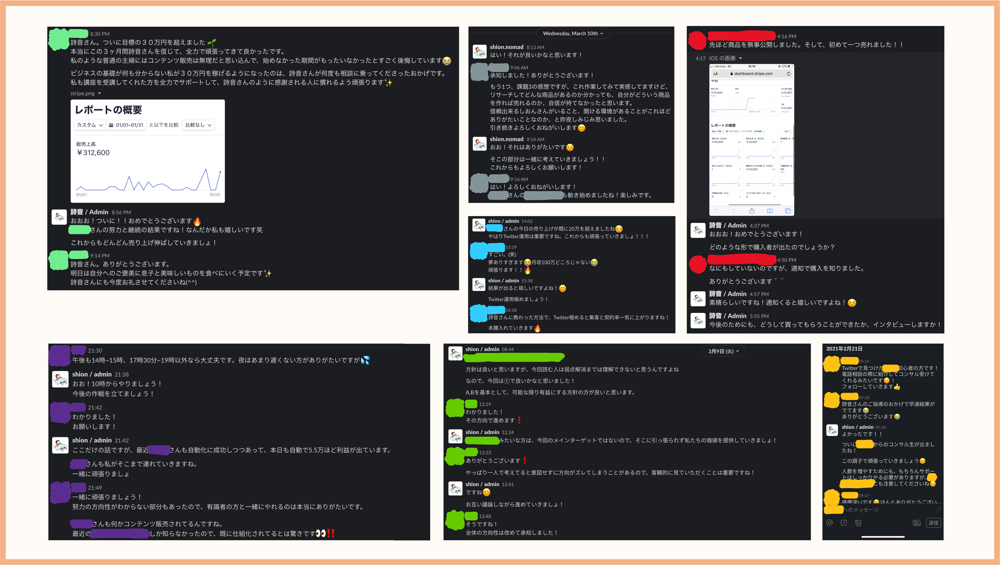

「 自分の商品を作りたいけど、
何からやればいいか分からない...」
「 副業を始めたいけど、
ビジネスの知識が全然ない...」
「時間の切り売りから抜け出したいけど、
どうすればよいの ...」
そんな方でも、２ヶ月後には自分の商品を持ち、新たな収入源を手に入れる
コンテンツ販売の集中コンサル「新 Nomad Contents」
こんにちは、しおんです！
コンテンツ販売の教科書を最後まで読んでくださり、本当にありがとうございます。
「私も自分の商品を作って、自動的な収益を得たい」と思っていただけたかと思います。
今回は、そんな方に向けて「新 Nomad Conents」という環境をご案内させていただきます。
お伝えしたいことはたくさんあるのですが、まず要点をまとめると
① 過去のNomad Conentsの成功/失敗事例を分析して作成した「0 to 1 ロードマップ」を用いて、アイデア作りから販売するところまでをたった２ヶ月間で実現
② 自動化や集客だけでなく「商品アイデアの0→1」を達成するための徹底的なコンサルティング
③ 実践と基礎の学習を同時に行うことで、結果を出しつつ一生使えるスキルを学べる最高の環境
これら３つを通して「あなたの強みを活かし、あなただけの商品を構築し、自動的に稼げるビジネスを一緒に作っていきませんか？」というご提案です。
また、本コンサルティングの最も大きな特徴は、以下の２つになります。
① 自動化や集客の方法を教えるだけの講座とは異なり、多くの人が苦労する「商品のアイデアを作るところ」から徹底的にコンサルティングを行うこと
② 動画やテキストを見て学んで終わりの講座ではなく、しおん本人と密にコミュニケーションを取り、二人三脚で商品作っていくこと
今から詳細をお話しするのですが、お伝えしたいことが多く、文章が長くなってしまいました。
ですから「もう文章はいいから、早く参加して商品を作りたい」という方は、一番下のお申し込みフォームまでスクロールしてお申し込みください。
ただこの手紙を最後まで読むだけでも、他の教材を買うよりも勉強になると思いますし、最後には限定プレゼントも用意しているので、是非一度目を通していただけると嬉しいです。
実際に私とお話しした多くの方が、月収１００万の壁を越えられず、悩んでいることが多いです。
なぜ月収１００万円の壁を越えられない方がこんなにも多いのでしょうか？
それは「月収１００万円稼いでいる人が、あなたより頭が良いから」ではありません。
「あなたに卓越した営業力がないから」でも「センスがないから」でもありません。
その答えは「あなたが稼げないビジネスを自分で選んでいるから」です。
稼げないビジネスとは「転売」「HP制作」「動画編集」「アフィリエイト」といったものです。
これらのビジネスは、確かに初心者でも取っ付きやすく、
初期の収益も早い時期から発生するため「誰でも楽して稼げる」というイメージがついています。
でも、実際はどうでしょうか？
始めている方は、もう気がついているかもしれません。
「実際にやってみると、低単価な案件しか取れない」
「最初の収益はすぐに出たけど、そこから収益が全然増えない」
私自身このような経験がありますし、あなたも心当たりがあるのでは無いでしょうか？
もちろん、動画編集やHP制作は、やればやるだけ収入を得ることができます。
自分のスキルを生かして、顧客に直接価値を提供できるので、満足感も得られると思います。
でも、その延長線上に「過酷な労働をせずに月収１００万円が得られる生活」は待っていますか？
あなたのビジネスは「あなたの理想のライフスタイル」を手に入れるのに最適と言えますか？
「動画編集」「HP制作」「転売」は、結局あなたの時間の切り売りにしかなっていません。
あなたが作業量を増やした分しか、収入は伸びることがないのです。
収入を伸ばすために、ディレクター業を始める方も多いと思います。
しかし、結局あなたが全て管理する必要があるため、労働時間は減らず収入も頭打ちします。
少し厳しいことを言ってしまいましたが、もう分かっていただけたかなと思います。
結局、時間の切り売りビジネスで、大きく稼ぐためにはハードワークするしか無いのです。
また、ハードワークを継続することで、あなたの体や精神が疲弊し労働を続けられなくなり、その瞬間から収入が０円になる可能性があることを忘れてはいけません。
私がここで言いたいことは、動画編集やHP制作がダメということではありません。
あなたがハードワークをせずに収入を増やすためには、これらの仕事とは別に「あなたの労働時間に比例しない収入源を作ること」が必要不可欠なのです。
動画編集で大きな収益を上げているインフルエンサーを頭に思い浮かべてみてください。
きっとその人も本業以外に、情報を発信し、労働時間に比例しない収入源を持っているはずです。
あなたのその気持ちはわかります。
正直なところ私もそう思っています。
そして今では、最高月収350万円を達成し、この夢を実現しました。
でも、最初から楽に稼げたわけではありません。
収入を増やすためには、まず最低限のビジネスの基礎から学ぶ必要があります。
なぜなら今のあなたの知識やスキルでは、あなたの現状の収入が限界だからです。
私自身、コンテンツ販売を始める前は「周りの人よりも稼ぐぞ」と、やけになっていました。
・平日は夜８時まで本業。その後は深夜まで副業の動画編集。
・休日は朝から夜まで休まず動画編集。
いわゆる、時間の切り売りで、資産化されないビジネスで短期的な収入を得ていたのです。
その結果、労働時間を増やしたおかげで、周りの人よりは少し稼げるようになりました。
でも周りの人よりも、明らかに自由に使える時間は少なかったのです。
自由な時間が少ないことに気がついた私は、次のようなことを毎日考えるようになりました。
「これが本当に自分が望んでいたライフスタイルなのか...？」
「いくら動画編集を頑張っても、時間とお金の両方揃った生活は待っていないなぁ...」
そしてこの生活を変えようと、コンテンツ販売というビジネスを始めることを決意したのです。
ですから、スタート地点は、この手紙を読んでくださっているあなたと同じなんです。
実は、私がコンテンツ販売を始めたきっかけは、もう１つあります。
それは、大学時代から仲良くさせてもらっている大学の先輩です。
その先輩はネットビジネスから実店舗ビジネス、そして幼稚園等も経営されていて、特にマーケティングスキルと営業スキルが非常に優れている方でした。
年に数回、その先輩とご飯を食べに行く機会があったのですが、その度に「詩音くんも自分のビジネスを持てばもっと楽しくなるよ」という話をしてくれていたのです。
資産化されないビジネスで疲弊した私は、この先輩のことを思い出し「どうしても短期間で自分の商品を作りたいので、指導してください」とお願いしました。
後々聞くと、その方は個人向けにはコンサル生を募集していなかったようなのですが、「僕が詩音くんを誘ったみたいなものだから」と言って、特別にコンサルしていただけるようになりました。
そして、私はこの先輩から、多くの知識やスキル、そしてビジネス界隈の実情を学んだのです。
（ 以降、この文章の中では、先輩のことを師匠と表現させていただきます。 ）
師匠に最初に言われた次の言葉がとても印象的でした。
「お金持ちの象徴である港区に若くして住んでいる人のほとんどが『情報発信で自分のコンテンツを販売している人』か『アダルト業界の斡旋をしている人』だよ。」
この話を聞いたことで、私の「コンテンツ販売がなんだか儲かりそう」という推測が、「統計的に見てもコンテンツ販売を行うことで若くても稼げる」という確信に変わりました。
（ちなみにアダルト業界には拒否反応があったので、迷わず情報発信で稼ぐことを選択しました）
コンサルが始まってから師匠には、「アイデアの作り方」「webマーケティング」「ライティング」「営業の方法」等のビジネススキルをひたすら叩き込まれました。
コンサルで何度も言われて、とても印象的だった言葉がもう１つあります。
「ビジネスを始めたければ特定の１つのスキルを学んでも全く意味がない。全てのスキルや戦略は複雑に絡み合っている。それらが組み合わさることで、各スキルの効果が何倍にも上がるんだ。」
つまり、ライティングやマーケティングは独立したスキルではなく「全体の中の１つのパーツ」に過ぎない。
それらが組み合わさって完成した時にとても強力な効果を発揮すると言うのです。
また、続けて次のようなことを言われました。
「そして、これらのスキルが網羅的に身についている人なんてほとんどいない。だから初心者が一人でコンテンツ販売（ビジネス）を始めると苦戦するんだ。でもね、逆にこれらのスキルを一度習得すれば、一生お金に困ることは無くなるよ。詩音くんもまずは基礎から勉強しよう。」
この言葉は、今考えてもまさにその通りだなと思います。
そして、私がコンサルを通して身につけたスキルや知識は誰にでも盗まれることがありませんから、本当に死ぬまで何十年も使い続けることができるのです。
それから私は、ビジネスの基礎を師匠から教わりつつ、実際に自分の商品の開発を進めました。
そして、数ヶ月後には「Vyond効率化の完全ガイド」という動画編集ソフトを効率的に使うための教材を公開することができたのです。
公開する前は、私にとって最初の商品でしたし、Twitterのフォロワーもまだ100人程度しかいなかったため、「自分の商品を買ってくれる人なんて本当にいるのか？」と、とても不安でした。
しかし、想像よりも商品は売れ行きがよく、初月４０万円以上の売り上げを達成できたのです。
クレジットカードの決済手数料しか費用がかかっていないため、利益率は驚異の96.4%です。
その後もありがたいことに、この商品は自動的に売れ続けています。
この経験を通して、ビジネスの基礎を網羅的に学ぶことで、再現性を持って稼げることを実感し、これまで以上に自分の商品作りに力を入れることに決断しました。
さらに売り上げを拡大するために、新コンテンツを作成し続けました。
その結果、最初の商品を出してから約半年後には、月収350万円を達成したのです。
月収40万円から月収350万円を実現する際に気をつけたことがあります。
それは「現状に満足せず常に学び続ける」ことです。
コンテンツ販売で売り上げを伸ばせない人に共通することがあります。
それは、自分の商品が売れ始めると「現状に満足し学ぶのをやめてしまう」ということです。
実践の試行錯誤の中でも経験として学ぶことはできますが、既に誰かが試して失敗したことまで、あなたの大切な時間をかけて挑戦するのは非常に非効率ですよね。
さらには、その間に正しい知識をつけたインフルエンサーが"優れた商品"をどんどん販売していくのですから、学ぶことを放棄した人が売り上げを伸ばせるわけがありません。
ですから、効率的に収益を増やしていくためには、私たちも先人の知恵を自分にビジネスに最大限取り入れていくことが必要不可欠なのです。
あなたの時間は有限です。
他の人が試して良かったことは取り入れ、良くなかったことは避ける。
当たり前のことですが、これを徹底するだけで、あなたのビジネスは急激に加速していくのです。
ダイレクトマーケティングというのは、メルマガや公式LINEのようなもののことです。
ダイレクトマーケティングを使うことで、あなたの知識をもとに作った商品を５〜５０万円といった値段で販売することが可能になるのです。
あなたの商品となる教材やコンサルティングは、あなたの頭の中にある知識をもとに作っていきますから、商品の作成には費用が一切かかりません。
でも、なぜ知識から作った原価０円の商品が５〜５０万円という価格で販売できるのでしょうか？
私は２つの理由があると考えています。
１つ目は「人は何かを学ぶためには、高いお金を払うものだから」です。
英会話教室やプログラミング教室など、何かを学ぶ時には数十万円をかけるのが一般的です。
例えば、中学生の学習塾ですら、１年間で平均３０万円ほどかかっています。
つまり、私たちは小さい頃から、何かのスキルを身に着けるためには、しっかりとお金を払ってプロから学ぶことが当たり前だと教育されてきたのです。
学ぶ側も自分の時間を投資するのですから、人生を良くしたいと思っている時に、たった3,000円の講座や教室なんて、品質が不安で、むしろ申し込みたくないですよね。
ですから、あなたの知識や経験をまとめ、これから新しいスキルを身につけたい人に届けることができれば、その対価として５〜５０万円というお金を頂くことができるのです。
しかし、知識をもとに自分の商品を作って、Twitterで投稿さえすれば、誰でも商品が勝手に売れるのかというと、もちろんそんなことはありませんよね。
「本当に価値のある商品か分からない...」
「どんな人が出しているかも分からない...」
こんな疑問ばかりの商品を買ってくれる人なんて滅多にいないからです。
つまり、あなたの商品を買ってもらうためには
「この商品を買えば、自分の悩みはきっと解決できる！」
「この人が出す商品なら、きっと素晴らしいものに違いない！」
と見込み客に感じてもらえることが非常に重要なのです。
そして、それを実現する仕組みこそが、ダイレクトマーケティングです。
つまり、あなたの商品が５〜５０万円で売れる２つ目の理由は「ダイレクトマーケティングを用いることで、顧客とあなたの間に信頼関係の構築ができるから」です。
ダイレクトマーケティングを用いると、次のような 3STEP で信頼関係の構築が可能です。
① まず、SNS上でのあなたの発信に興味を持ってくれた人に、あなたのメルマガや公式LINEを紹介して、登録してもらいます。
② そして、メルマガや公式LINEの読者の課題や悩みを解決するために、普段のSNS上での発信よりも「具体的で専門性の高い情報」を惜しみなく提供していくのです。
③ その結果として、読者の悩みや課題を少しでも解消できれば「あなたへの信頼感」や「商品への期待値」が一気に高まります。
ここでさらに、信頼関係を高めるために必須のテクニックを２つ紹介します。
1. ②の情報を提供する際には、１回で全部送るのではなく数回に分けて提供してください。
数回に分けることで、単純接触効果が生まれ、あなたへの信頼度がさらに高まっていきます。
これにより「あなたの情報には価値があり、信頼できる人だ」と感じてもらうことができます。
2. 無料で提供する情報だからと言って、手を抜かないことです。
読者は、あなたのスキルや人柄を「無料の情報」から判断しているからです。
無料だからといって質の低い情報を提供するのは、自分で自分の評価を下げているのと同じです。
メルマガや公式LINEを通して、この２つのテクニックを意識しながら、読者の悩みを解決していく発信ができれば、「あなたへの信頼感」や「商品への期待値」は確実に高まるのです。
目先のお金を稼ぐビジネスだけをいくら続けても、理想のライフスタイルは一生手に入りません。
「始めるのが簡単そうだし、すぐに稼げそう！」
私自身、そんな期待を持って、ブログ、アフィリエイト、動画編集を始めました。
でも、実際はどうでしょうか？
・アフィリエイトやブログは、どんなにアクセスがあったとしても、広告主が広告の出稿をやめてしまったら、突然収入が０になることもあります。
・YouTubeも同様で、広告単価が極端に下がり、明日から収入が１/１０になってしまった。という話もありますよね。
・noteも同様で、インフルエンサーの方の有料記事が運営側に消されて、お金が支払われないという事件も多発していますよね。
そうです。
これらのビジネスは全て「他者のプラットフォームに依存した稼ぎ方」なのです。
確かに他社がプラットフォームを用意してくれているので、最初の収益が簡単に手に入ります。
でも、それが「落とし穴」だったのです。
「今すぐ楽して稼ぎたい」と思って、これらのビジネスだけに力を注ぐのは、もうやめましょう。
動画編集に関しては、私自身、今でも続けています。
動画編集は楽しいですし、顧客にも本当に喜んでいただけるからです。
しかし、結局は時間の切り売りに過ぎないというのが現実です。
そして、実際にやっている人も
「動画編集だけでは、理想としている自由なライフスタイルを手に入れることはできない」
ということに気がつき始めたと思います。
私は動画編集やブログなどを否定したいわけではありません。
しかし、１年後、あなたが理想のライフスタイルを手に入れるためには、動画編集やブログに加えて、「他社のプラットフォームに依存していない ＆ あなたの労働時間に比例しない収入源」を持つことが重要だと言うことです。
私もそうしてきたし、自分のビジネスを持って本当に良かったと思います。
これからあなたが商品にするのは「あなたの知識やスキル」です。
メルマガや公式LINEを使って、 あなたの情報に価値を感じてくれるファンを獲得し、信頼関係を構築した上で、あなたの知識やスキルを商品としてご提案します。
プラットフォームに一切依存しないので、運営者から排除されることも、広告単価がいきなり下がることも一切ありません。
誰にも邪魔されない「あなたのビジネス」を作ることができるのです。
... もう分かりましたよね？
ビジネスとは、あなたを信頼してくれる人を増やして「その人にとって価値のある商品」を提供することで、そのお礼としてお金をいただく「人助け」なのです。
そして、この一連の流れを再現性を持った方法で構築することができれば、お金が自動的に集まってくる仕組みが完成するのです。
つまり、あなたが学ぶべきなのは「すぐに１０万円稼げる」というお小遣い稼ぎの方法ではなく、「相手を豊かにした対価としてお金を頂く」というビジネスの本質とその仕組み化の方法です。
そして、一度ビジネスの本質について学んでしまえば、あなたの知識は誰にも盗まれることはありませんし、プラットフォームに一切依存していないので、学んだ本質が明日から突然使えなくなることもありません。
つまり、この本質を理解してしまえば、あなたはいつまでも稼ぎ続けることができるのです。
私は、ここまで話を聞いてくれたあなたに、理想のライフスタイルを手に入れて欲しいと本気で思っています。
そして私も、あなたと一緒に自分の人生を変えていきたいと思っています。
今から、まだ公表していないことを、あなたに特別にお話ししたいと思います。
それは....
「私は今後、ほぼ全ての商品を『共同』で開発 / 販売していく」
ということです。
なぜなら共同で開発する多くのメリットが、作る側にも買う側にもあるからです。
・１人で開発するよりも質の高い教材を提供できる
・分担作業によって、短期間で商品を開発することができる
・お互いのフォロワーを共有し合って、大きなコミュニティーを作れる
そして、共同開発する仲間を「Nomad Contentsの卒業生」から募集したいと考えています。
なぜなら受講生や卒業生は、Nomad Contentsの講座やコンサルを通して、ビジネスの基礎を網羅的に学び、実際に自分のコンテンツ販売を経験しているからです。
私が持っているビジネスの知識やスキルを、Nomad Contentsのコンサルの中で、本気で教え込んでいるからこそ、共同開発する時にも非常に効率的かつスムーズに進めることができるのです。
実は、もう３名の卒業生と共同開発をしています。
「Nomad Anime / Nomad Twitter / Nomad Coding」という商品を共同で展開したり、「Vyond Life」という100名を超えるコミュニティーを共同で運営したりしています。
そして、今後も「Team Nomad」として、このチームを大きくしていこうと思っています。
全員がビジネスの本質を理解していて、コンテンツ販売の経験があるチームって最強なんです。
そして、あなたにも、このチームを一緒に作っていく仲間になって欲しいと思っています。
だから、まずはあなたにも「あなたの知識やスキルを商品にして収益を生み、あなたの望むライフスタイルを手に入れる力」を身に付けていただきたいのです。
そして、共同開発で成功を収めるためにも、商品を出した経験や実績を作って欲しいと思います。
そのために、ビジネスの本質からテクニックまで網羅的に学びつつ、私と一緒に「あなたの商品」を作っていただける超実践的な環境を用意いたしました。
講座形式ではなくコンサルティング形式で、私自身が一人一人と向き合って一緒に商品を作っていくのは、今回案内している「Nomad Contents」が最後の機会になると思います。
私も真の成功に向けて、自分を鼓舞し、全力で人生を変えていきます。
「一歩踏み出して、私と一緒に人生を変えませんか？」
これから話す内容を読んで、考えていただけると嬉しいです。
この度、「２ヶ月で自分の商品を作り本気で人生を変えたい人」のために、人数限定でコンサル生を募集することに決定しました。
一言でまとめると「私と一緒にあなたの商品を作りながら、ビジネスの基礎を徹底的に叩き込んでいく」というものです。
私は本格的にコンテンツ販売を始めようと決意してから、ビジネスの本質を学ぶために、コンサルや教材を含め、合計150万円以上のお金を自己投資してきました。
そして、今でもさらに成長するため、学びに非常に多くの時間とお金を投資しています。
その結果、コンテンツ販売を初めて１年以内に、月収350万円以上稼げるようになりました。
私は最短で成果を出すために、金銭的なリスクを取ってコンサルや教材にひたすら投資しました。
しかし、誰もがここまで大きなリスクを取る必要はないと思っています。
そして、コロナの問題がある今の環境ではリスクを取れる人が少ないことも分かっています。
過去の受講生にも、コンテンツ販売を学びたいけど、奥さんやお子さんがいたり、生活に余裕がなかったりして、60〜100万円もする高額な教材は買うのは怖いと悩んでいる人が多かったです。
そこであなたに最速最短で結果を出していただくために、コンテンツ販売を行う上で必要な基礎知識を全て提供し、私と二人三脚で「あなたの商品」を作る最高の環境を私が提供します。
コンサル生を卒業した後には、私とビジネス仲間になり共同開発していくのですから、惜しみなく全ての知識やスキルを提供することは、私としても大きなメリットになるのです。
お互いにwin-winな環境だからこそ提供できる、本気で人生を変えられる内容になっていますので「Nomad Contents」の具体的な内容をご覧ください ▼
まずコンサル開始日には失敗を科学的に避け、成功する可能性を最大限高めるための「０to１ロードマップ」を提供します。
このロードマップは、２ヶ月という短い期間で、商品のアイデアを作り、販売していくための道筋を詳細かつ具体的に示したものです。
１週間ごとにやるべきことが明確に決まっており、「商品アイデアの作成」「集客の方法」「販売の方法」等々、全てテンプレート化しています。
「成功はアート、失敗はサイエンス」という言葉は多くの人が聞いたことがあると思います。
しかし、コンテンツ販売では「成功はサイエンス、失敗もサイエンス」が正しいと思います。
コンテンツ販売で成功するためには、Googleを作るような斬新なアイデアは必要ありません。
ですから、コンテンツ販売で失敗するパターンは数えられる程しかないのです。
そして、その失敗パターンさえ避けることができれば、あなたの商品を買ってくれる人が現れ、その対価として理想のライフスタイル、つまり成功を手に入れることができるからです。
失敗パターンの例としては、
・アイデアがありふれたもので、うまく集客ができていない
・見込み客との信頼関係を十分に構築できていない
と言ったものです。
私はこれまで、過去の受講生や私自身の経験を通して、多くの失敗と成功を体験してきました。
そこでの傾向と実績を細かく分析し「失敗を避けて成功を掴むためには何をするべきなのか」についてまとめ上げたのが「０to１ロードマップ」です。
様々な商品を開発した私だからこそ提供できる、再現性の高いロードマップだと思います。
また１週間ごとにやるべきことが、かなり具体的に記載されていますので、２ヶ月間無駄な時間や悩みが一切無い状態で商品作りに取り組んでいただくことが可能です。
「いざ商品を作ろうと思っても、何から始めたらいいか分からない...。」
「次は何をしたらいいのか分からない...。」
私もこんな時に、フリーズして手が止まってしまうことを何度も経験しました。
今考えると無駄な時間だったなと思います。
あなたには無駄な時間を減らし、成功まで一直線で走り抜いて欲しい。
そんな思いで、このロードマップを作り上げました。
「本業もあるし、ロードマップ通りに進めることができなかったらどうしよう...。」
と不安に感じる方もいるかもしれません。
でも、大丈夫です。
今回のコンサルでは、私が常に進捗を確認し、あなたの進捗に合わせたコンサルやアドバイスの提供とロードマップの修正を随時行なっていきます。
もし商品の開発期間が伸びてしまっても、追加でのコンサル料は不要です。
ですから、本業が忙しくなって、商品を作るのに４ヶ月かかってしまっても大丈夫です。
実は私自身、平日は会社で働き、夜や休日を使ってコンテンツ販売に取り組んでいたので、本業が突然忙しくなってコンテンツ制作が少し遅くなってしまった経験があります。
ですから、本業や他の仕事が忙しくなるのはしょうがないと思っています。
でも、忙しさを理由に、新たな挑戦を先伸ばしにするのは、本当にもったいないと思います。
そこで今回は、商品の開発期間が伸びてしまっても、追加のコンサル料は不要としました。
でも、あなたには、もう一つ不安な点があると思います。
それは「本当に自分がコンテンツなんて作れるの？」ということです。
というのも、私自身、最初はこんな不安を抱えていたのです。
「本当に商品のアイデアが思い浮かぶのか不安...。」
「似た商品はたくさんあるし、差別化できるアイデアを作れるかな...。」
「周りの人よりも優れているところなんて無いのに、自分の商品なんて作れるのかな...。」
でも、安心してください。
もうあなた一人でアイデアを考える必要はありません。
「Nomad Contents」では、私と二人三脚でアイデアを作っていくのですから。
私はこれまで、本当に多くの受講生と一緒に商品を作ってきました。
実は、受講生の中には、他のコンテンツ販売に関する講座やコンサルを受講していた、もしくは、今も受講しているという方が何名かいらっしゃいました。
私は「他の講座やコンサルを受講しているのに、なぜ私の講座を受講してくれるのか？」と気になり、彼らに素直に聞いてみることにしたのです。
すると、次のような回答が返ってきました。
「商品を販売するためのツールの使い方は教えてくれたけど、販売する商品が無いんです...」
「商品に関する具体的なアドバイスを貰えず、困っていました...」
「まだ商品が無いのに、自動化の話ばかりされて、どうすれば良いか分かりません...」
他のコンテンツ販売の講座やコンサルは、集客や自動化の方法（１→１０）を対象としていて、あなたがどんな商品を作っていくべきか（０→１）は、「あなた１人」で考えなければならなかったのです。
そもそも、どんな商品を作るかのアイデアを決めずに、集客の方法ばかり勉強しても意味がありませんし、自分１人で商品アイデアを考えても、自信が持てず、作業に身が入らないことも多いですよね。
私も最初の頃は、このアイデアで本当に上手くいくのかなと悩んでいて、どうしても作業に身が入らず、商品作りを投げ出してしまいたくなるときがありました。
一方で「良いアイデアが作れた！」と自信を持てると、モチベーションがグッと上がります。
そして、全ての工程が楽しくなり、自然と良い結果を残すことができるようになったのです。
そこでNomad Contentsでは、自動化や集客の方法を教えるだけの講座とは異なり、多くの人が苦労する「商品のアイデアを作るところ」から徹底的にコンサルティングしていきます。
そして自分の商品に自信を持った上で、集客と販売に全力で取り組んでいただきたいと思います。
実際、商品のアイデアを細かい仕様まで一緒に考える講座やコンサルは、他には無いと思います。
実際どんな感じでコミュニケーションを取っているかイメージしてもらうために、いつも使用しているチャットツールのスクリーンショットを持ってきました。
（ 具体的な戦略についての会話は貼れないので、コンサル生との距離の近さや一緒に商品を作っている様子が少しでも伝わると嬉しいです。)
▼ クリックで拡大できます
また商品開発の方針を決める段階では、zoomやmeetでも議論を行うことも多いです。
私が１対１のコンサルにこだわるのは、動画を視聴するだけの講座よりも１対１のコンサルの方が確実に成果が出ることが過去の講座経験から分かっているからです。
やはり、一人一人に異なった個性や環境があるので、どんなに優れた手法や教材があったとしても、人ごとに最適化されたアドバイスができるコンサルティングの方が結果を出やすいのです。
また、届いた動画を視聴しながら自分１人で進める動画講座に比べて、相談相手（しおん）がいることでモチベーションが保ちやすいことも成果を出すために非常な重要なことだと思っています。
私自身、商品のアイデアや売り方を考えることが楽しいですし、なによりも、あなたに自分の商品を作って、理想のライフスタイルを手に入れた上で、私と一緒にさらに大きな仕事をしていただきたいのです。
ですから、寝る時間を削ってでも、あなたが結果が出せるように、何でもしたいと思っています。
また、本コンサルでは「あなたの商品を作ること」だけがゴールではありません。
「今回はしおんさんのおかげで商品は作れたけど、自分１人だとやっぱり難しいな...」
「もっとビジネスを拡大したいけど、どうすれば良いんだろう。やり方が分からない... 」
たとえコンサルで自分の商品が作れたとしても、こんな状態にはなりたくないですよね。
ですから、「あなた自身が１人でも自分の商品を作り、そしてビジネスを拡大できるようになること」が、本コンサルのもう１つのゴールです。
そこで、本コンサルのカリキュラムの中で、あなたにはアイデアの作り方のスキルを身に付けていただき、それを実際に商品として販売していくための基礎知識も学んでいただきます。
そして今回は、あなたに網羅的かつ実践的な基礎知識を身に付けていただくために、半年以上かけて作成した特別な動画教材を用意いたしました。
この教材は、これまでの受講生に提供してきた動画教材を、受講生からの生の声を参考に何度も何度もアップデートすることで、ついに完成した最強の動画教材です。
これまで多くの受講生と商品を作ってきた私だからこそ提供できる、コンテンツ販売を始める上で絶対に知っておくべき知識を全て詰め込んだ動画教材になっています。
次の章では、その動画教材の詳細についてお話しします。
コンサル生には、コンテンツ販売する上で必須の知識をまとめ上げた動画教材をお渡しします。
でも、ただお渡しするだけではありません。
今回の動画教材は、先ほどお伝えした商品開発のロードマップと結びついていて、その週の実践することに対応したビジネスの知識を学べるようになっています。
このような経験がある方も多いのではないでしょうか？
「基礎を学んだが、実践で活かせる場が無く、ノウハウコレクターになってしまった...」
「実践ばかりに集中して、インプットを怠った結果、質の低いアウトプットになってしまった...」
このような状態になるのを防ぐために、Nomad Contentsでは「基礎の学習」と「実践」を結び付けた最高のロードマップを用意することで、自然と質の高いアウトプットを出せるように設計しました。
また、先ほど紹介した師匠の言葉を覚えていますか？
「ビジネスを始めたければ特定の１つのスキルを学んでも全く意味がない。全てのスキルや戦略は複雑に絡み合っている。それらが組み合わさることで、各スキルの効果が何倍にも上がるんだ。」
コンテンツ販売を行う上でも同様で、偏ったビジネス知識では大きな成果は得られません。
そこでNomad Contentsでは、私がこれまで150万円以上の必要を費やして学んできた、ビジネスの知識やスキルを超網羅的に解説しています。
＜ 動画教材内容 ＞
①【完全版】 オンラインコンテンツ販売のロードマップ
② ほとんどの人が知らないアイデア発想の基礎理論編と応用編
③ ０からでもできるオンラインコンテンツのアイデア作成手順
④ 商品が自動で売れる悪魔のセールスライティングの全貌
⑤ 見込み客の「 欲しい ！」を引き出す価格戦略
⑥ 商品の価値が跳ね上がる商品販売サイトの構築の全手順
⑦ プロダクトローンチのためのSNS運用とLステップ運用術
ここまで網羅的に学べる動画教材は、正直他にはないと思います。
また動画教材に視聴期限はありませんので、何度も復習することが可能です。
そして、最前線で活躍している私だからこそ提供できる「最新のビジネス手法」も、惜しみなく追加教材として今後解説していくので、あなたにも私と一緒に成長していただきたいと思います。
いかがだったでしょうか？
コンテンツ販売を進める上で最高の環境だと感じていただけたと思います。
あなたが今気になっているのは、このコンサルの参加費だと思います。
「この手のコンサルや講座って45万円とか60万円以上かかるし、アイデアも一緒に考えてくれるなんて、いくらかかるんだろう...」
「コンサルを受けて自分の商品を作りたいけど、今の収入だと高額なコンサルは受けられない...」
と、思っている方が多いと思います。
そんな方には、驚いていただける提案になっているので、まずは参加費をご覧ください。
- 商品開発のための独自ロードマップ
- ビジネスの基礎を網羅した動画教材
- アイデアを0から一緒に作る徹底コンサル
( 作成期間２ヶ月*＋改善期間４ヶ月 )
*作成期間は伸びても追加料金不要
149,800円
Nomad Contents Consultingの参加費は「14万9800円 」となります。
他の講座やコンサルを購入した経験がある方は、
「この内容のコンサルがこんなに安いわけが無い。何か『裏』があるに違いない。」
と思われる方がほとんどだと思います。
正直に言うと、、、確かに「裏」があります。
その裏というのが、何度も伝えてた「共同開発」です。
つまり、ここまで安くできる理由は、コンサル生が将来のビジネス仲間になるからです。
実際に、コンサル卒業生と共同で開発した商品をいくつも展開しており、すでに月５０万円以上の利益が出ている商品もあります。
私が当初想定していた通り、コンサルを通して徹底的にビジネスの基礎を教え込んだ人と一緒に仕事をするのは、非常に効率が良く短期間で成果も出ることが、事実として証明されたのです。
ですから、あなたにも、まずは基礎を学びながらあなたの商品を作っていただき、その後、私と共同で商品を作っていただきたいと考えています。
Nomad Contents Conslutingの参加費を高くするよりも、その後の共同開発で得られる収益の方が大きくなることが分かっているからこそ、この低価格でご提案できるのです。
もちろん中には「高っ！！」と思う方もいると思います。
人それぞれ捉え方は異なるのは当たり前ですが、「本気で人生を変えたい人」からすると安すぎるくらいの金額だと思います。
① 私が150万円以上かけて学んだビジネスのスキルを全て学べて、② コンテンツ販売のための具体的な道筋もあって、③ 24時間いつでもプロに相談できる環境を手に入るので、この価格はかなり安いと思います。
動画教材だけでも、各テーマごとに他の教材では数万円で販売されているレベルのものを用意しているので、いくつも他の教材を買い集めるのであれば、本コンサルを受講してしまった方が安上がりになると思います。
また、コンサル生の中には、アイデアや売り方について毎日私に相談してくれる人もいますし、動画を何周を見直してくれる人もいるので、活かし方次第では１０倍の価格でも元が取れると思います。
でも実は、参加条件が１つだけあります。
その条件は「本気で自由な人生を掴みたいと思っているか」です。
今回のコンサルティングでは、コンサル生に動画を提供して終わりではありません。
アイデアを作るところから販売するところまで、私が徹底的にコンサルティングします。
私の時間も有限ですから「本気で人生を変えたい人」だけに価値を届けたいのです。
もしあなたが参加条件を満たしているのであれば、是非私と一緒に人生を変えましょう。
＜お支払い方法について＞
お支払いに関しては、クレジットカードもしくはデビットカードでのお支払いとなります。
また、「今は収入が少ないけど、これから人生を変えたい！」と思っている人が参加できるように、最大１０回の分割払いにも対応しております。
また、２〜３ヶ月後には自分の商品からの収益も得られることが想定されるため、今すぐに全額払えない方でも分割払いでお申し込みいただけると、参加していただきやすいと思います。
＜ご返金について＞
商品の特性上、お客様都合でのご返金は受け付けておりせん。
実は、過去の講座ではご返金を受け付けていましたが、コンサル生には大変満足していただいており、今までに返金された方は１名もいません。
しかし、私の影響力も高まってきたことで、「返金可能ならとりあえず参加してみよう」という人が増えてくることを想定し、今回はご返金を受け付けないという判断をしました。
私は、参加してくださった方全員が、120%満足できるコンサルを提供する自信があります。
そして、コンサルを卒業した後に、私と一緒にさらに素晴らしい商品を開発して欲しいのです。
だからこそ、今回は本気で人生を変えたいと思っている人だけに参加して欲しいと思っています。
＜人数制限について＞
受講生へのコンサルの質を保つために、お申し込みに人数制限を設けております。
毎月５〜７名程度を募集する予定ですが、以下の２点の注意事項があります。
1. 参加中のコンサル生の人数によって、月の募集人数が変わることがあります
2. コンサル生の卒業のタイミングによって月の途中で募集が再開することがあります
お申し込みボタンが表示されている際は、募集期間中ですのでご安心ください。
ここまで読んでくださって本当にありがとうございました。
2021年は「コンテンツ販売の全盛期」になると言われています。
私はこの波に乗って、必ず有名なインフルエンサーになることを約束します。
私１人では達成が難しいかもしれません。
でも、コンサルの受講生や卒業生と、そして、あなたと一緒なら確実に達成できると思います。
だからこそ、あなたにも私と一緒に有名になって影響力をつけていただきます。
このコンサルに参加してくれたら、２ヶ月後、見えている世界が今と全く違うと思います。
１度きりの人生です。
ここまで読んでくださったあなたは、今の人生を変えたいと思ってくれていると思います。
「A：たった２ヶ月で理想の自由なライフスタイルを手に入れるのか」
それとも
「B：今後もこれまで通りの人生を続けるか」
「Aを選んだあなた」と「Bを選んだあなた」の２ヶ月後の姿を１０秒間想像してみてください。
あなたと一緒に商品を作ることを本当に楽しみにしております。
長い文章でしたが、最後まで読んでくださって、ありがとうございました。
- 商品開発のための独自ロードマップ
- ビジネスの基礎を網羅した動画教材
- アイデアを0から一緒に作る徹底コンサル
( 作成期間２ヶ月*＋改善期間４ヶ月 )
*作成期間は伸びても追加料金不要
149,800円
14,980円(10回)
「もう参加することに決めた！」という方は、上のボタンから申し込んでください。
でも、やはりまだ悩んでいる方もいると思います。
「コンテンツ販売に取り組みたいけど、いきなり１５万円の申し込みは怖い...。」
「コンサルは良さそうだけど、私は話してからじゃないと人を信頼できないんだよね...。」
「実際に過去のコンサル生の実績とか、実際の進め方についてもっと詳しい話を聞きたい...。」
そんな人のために、人数限定で無料コンサルティングを実施することにしました。
お話しする内容は何でも大丈夫です。
「しおんさんの人柄を知りたいから、一回話してみたい！」
「すでにコンテンツ販売に取り組んでいるけど、うまくいかないから相談した！」
「Nomad Contents Conslutingの過去の実績や細かい進め方についての質問したい！」
私自身、人とお話しをするのが好きなので、誰でも大歓迎です。
「通話は緊張するから文章で無料コンサルをお願いしたい」という方もお待ちしております。
ただし、無料コンサルに時間を使い過ぎて、受講生へのコンサルの質を下げてしまうのは、本末転倒なので、１週間に最大３名を上限*とさせてください。
（ *もし１週間の上限を超えてしまった場合は、翌週以降に再度日程調整させていだだきます。）
応募方法は、私の公式LINEで「無料コンサル希望」とメッセージするだけです。
３名の枠は、本当に一瞬で埋まってしまうと思いますので、今すぐ送っちゃってくださいね！
最後になりますが、私の拙い文章を最後まで読んでくださり、本当にありがとうございました。
あなたのお話できることを楽しみにお待ちしております。
藤原詩音
{kind=link}